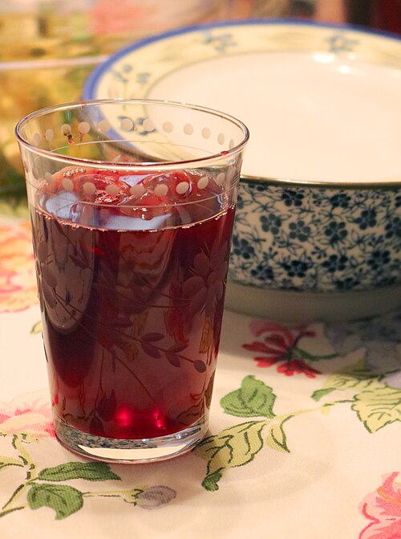
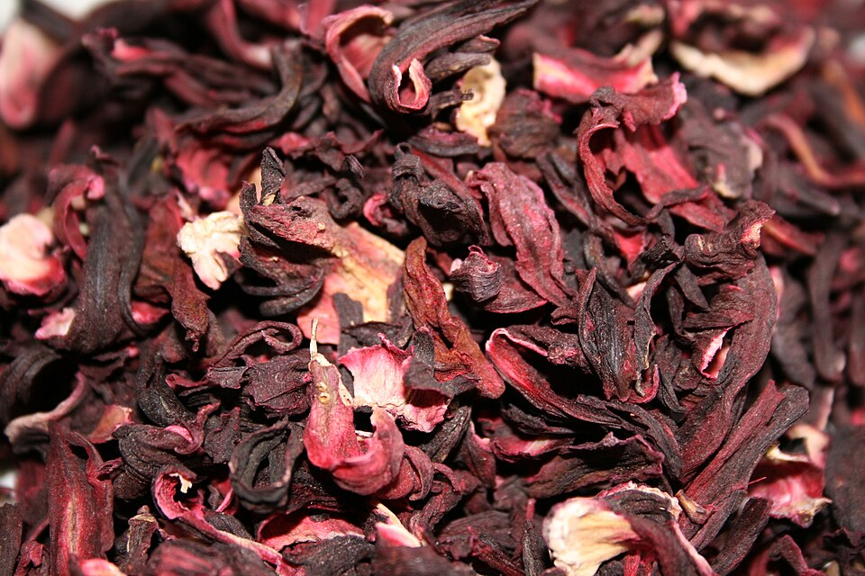

A drink with identity
Bisap carries Senegalese food culture into an approachable, ready-to-drink format.
INVESTOR & INDUSTRY PARTNER PRESENTATION
A bold hibiscus drink. A familiar taste of home. HOHM is bringing Senegal’s Bisap tradition to a new everyday ritual.
Discover the nutritional opportunity
THE INVESTMENT THESIS
HOHM brings together a distinctive taste, a researched botanical ingredient, and a repeat-purchase retail model.
Bisap carries Senegalese food culture into an approachable, ready-to-drink format.
Hibiscus supplies anthocyanins and has been studied for cardiovascular and metabolic benefits in human trials.
A $200,000 proposed launch investment supports product readiness, inventory, and regional sales development.
01 / THE ROOTS
Known widely as bissap in Senegal, this hibiscus drink is at the heart of HOHM’s Bisap.
Its red color comes from the fleshy calyces of Hibiscus sabdariffa—the structures surrounding the seed capsule, often sold as “hibiscus flowers.”
A 2009 Senegalese production review traces the plant’s introduction to Senegal to the nineteenth century. It documents cultivation across the country, particularly Kaolack, Diourbel, Thiès, Saint-Louis, and Louga.
The same review describes small producers and women’s groups within the value chain. HOHM’s opportunity is to honor that heritage through accountable sourcing and a recognizable drink.
HOHM brings together home and homme: humanity’s connection with nature.
Source: Cissé et al., Fruits, 2009; historical context, not a current supply census.

THE HEART OF BISAP
Tart flavor. Ruby-red color. The hibiscus ingredient that connects the drink to its roots.
Photography credits02 / HOW IT IS MADE IN SENEGAL
A traditional preparation documented by Slow Food’s Senegal network starts with dried calyces, water, mint, lemon, and sugar to taste. Household recipes vary.
Rinse the calyces and mint. Add boiling water, cover, and allow the color and flavor to infuse.
Filter out the solids, add lemon, and adjust sweetness to balance the tart infusion.
Serve cold. HOHM will develop its own consistent recipe through sensory trials with people who know the drink.
The documented recipe uses 50 g dried calyces in 2 L water and a 20-minute infusion. This is culinary context; a commercial process and shelf life must be validated separately.
Source: Slow Food Foundation, Sénégal: de la terre à la table, hosted by FAO.
03 / THE HERO PRODUCT
A proposed 355 mL bottled hibiscus drink, built around the ruby-red infusion and refreshing tartness of Bisap.
One original recipe will lead the launch. Unsweetened and lightly sweetened prototypes will be evaluated for taste and consumer preference.
Water and hibiscus form the base; sugar level, mint, and lemon remain formulation decisions. The package shown is a concept, not a finished retail label.
Authentic Bisap flavor, an approachable everyday format, and an ingredient story grounded in research.
First occasions: with lunch, alongside a meal, or as an alcohol-free social drink.
04 / THE BENEFITS OF HIBISCUS
The nutritional appeal of Bisap begins with hibiscus: a botanical containing polyphenols, with human research supporting its cardiovascular potential.
Hibiscus contains delphinidin and cyanidin derivatives, plant compounds responsible for its distinctive red color and studied for antioxidant activity. Ingredient research.
Controlled studies have found blood-pressure reductions with regular hibiscus consumption, particularly among adults with elevated blood pressure. Human research.
A meta-analysis found a modest reduction in LDL cholesterol compared with other teas and placebo, supporting further interest in hibiscus and cardiometabolic health. Evidence review.
Benefits described here concern hibiscus research. Study preparations and doses vary; these findings are not a claim that HOHM treats a medical condition.
05 / NUTRITION & WELLNESS EVIDENCE
| Benefit area | What the research shows | Why it matters |
|---|---|---|
| Plant-based antioxidant compounds | Hibiscus contains anthocyanins, including delphinidin-3-O-sambubioside and cyanidin-3-O-sambubioside. | A distinctive botanical composition and naturally occurring pigment story. Laboratory antioxidant activity is different from a demonstrated clinical benefit. |
| Blood pressure | A 2022 meta-analysis reported a 7.10 mmHg greater systolic reduction than placebo (95% CI: 1.20–13.00 mmHg reduction). | The most developed human evidence area for hibiscus. Results varied substantially between trials (I² = 95%). |
| LDL cholesterol | The same review reported a 6.76 mg/dL LDL reduction versus other teas and placebo (95% CI: 0.07–13.45 mg/dL reduction). | A promising, modest effect. Study variation and borderline statistical significance call for careful interpretation. |
| Broader metabolic research | A 2025 review covering 26 randomized trials and 1,797 participants reported improvements in blood pressure, lipid measures, and fasting glucose. | An expanding research base across several markers; formulations, populations, and doses differ. |
Sources: Ellis et al., 2022; Updated review, 2025; Sinela et al., 2017. Hibiscus is a food ingredient, not a substitute for prescribed treatment.
06 / THE PRODUCT EXPERIENCE
Bisap’s tart hibiscus flavor gives HOHM a foundation for a refreshing drink with a deliberate approach to sweetness.
Preserve the rich red infusion and tart character that make Senegalese Bisap distinctive.
Balance the hibiscus with sweetness through tasting. The goal is enjoyment that earns repeat purchase.
Position Bisap alongside meals and social occasions as a flavorful alcohol-free option.
07 / INGREDIENT QUALITY
Hibiscus anthocyanins are part of the ingredient’s identity: vivid color, botanical character, and a compelling nutritional story.
Establish consistent calyx identity, color, and flavor with sourcing partners.
Match extraction and processing to the desired taste and pigment retention.
Track color, sensory quality, and shelf life across production batches.
Research on Senegal-grown Vimto hibiscus shows anthocyanin retention depends on storage temperature and time. This makes processing and packaging part of product quality. Sinela et al., Food Chemistry, 2017.
08 / WHAT HUMAN RESEARCH SHOWS
A randomized, double-blind trial studied 65 adults with prehypertension or mild hypertension over 6 weeks.
Participants consumed three 240 mL servings of hibiscus tea daily or a placebo beverage. Mean systolic blood pressure changed by −7.2 mmHg in the hibiscus group and −1.3 mmHg in the placebo group (p = 0.030).
Hibiscus has been studied in humans, giving the brand an evidence-based ingredient story.
The tested intake was 720 mL daily in a specific population. It was not HOHM’s formulation, and the result cannot be assigned to one bottle or generalized to all consumers.
HOHM is being developed as a food beverage. Its nutritional appeal complements its taste and cultural identity.
09 / THE EXECUTION PLAN
Finalize a great-tasting recipe, a validated production process, and packaging that protects the drink.
Qualify ingredient suppliers and a manufacturing partner, with clear specifications and production schedules.
Launch with targeted sampling, account support, and close monitoring of reorder rates and sell-through.
10 / ROUTE TO MARKET
African and diaspora communities, natural-food shoppers, and consumers seeking distinctive alcohol-free drinks.
Independent natural stores, restaurants, cafés, and fitness-oriented retailers across New England.
Extend into upstate New York and adjacent markets as account density and repeat orders support efficient delivery.
The sales engine: more productive accounts, more bottles sold per account, and replenishment that turns trial into recurring revenue.
11 / BOTTLED-DRINK ECONOMICS
Launch planning model: 355 mL bottles sold directly to retail and foodservice accounts. Target shelf price $3.99; wholesale price $2.40.
| Per bottle | Assumption | Meaning |
|---|---|---|
| Suggested retail | $3.99 | Target consumer price |
| HOHM wholesale revenue | $2.40 | Direct to retailer; no distributor included |
| Liquid ingredients | $0.20 | Cost budget |
| Bottle, closure & label | $0.45 | Cost budget |
| Co-packing & processing | $0.40 | Cost budget |
| Inbound freight / QA allocation | $0.20 | Cost budget |
| Base landed COGS | $1.25 | 52.1% of wholesale revenue |
| Gross profit | $1.15 / 47.9% | Before selling, outbound delivery, and overhead |
| Selling / delivery / returns allowance | $0.35 | Delivery, selling expenses, and returns |
| Contribution | $0.80 / 33.3% | Before fixed costs, financing, and tax |
Implied retailer margin: 39.8% at $3.99 retail and $2.40 wholesale. Cold-chain requirements, distributor discounts, promotions, deposits, and unusual spoilage could materially change these economics.
THREE-YEAR FINANCIAL PROJECTION
A bottom-up planning case that grows distribution and sell-through while allowing costs and operating capacity to rise.
| Commercial driver | Year 1 | Year 2 | Year 3 |
|---|---|---|---|
| Average active accounts | 100 | 250 | 500 |
| Bottles per account / week | 24 | 30 | 36 |
| Selling weeks | 50 | 50 | 50 |
| Bottles sold | 120,000 | 375,000 | 900,000 |
| Revenue at $2.40 wholesale | $288,000 | $900,000 | $2,160,000 |
| Landed COGS / bottle | $1.25 | $1.31 | $1.38 |
| Gross profit | $138,000 | $408,750 | $918,000 |
| Selling / delivery / returns per bottle | $0.35 | $0.37 | $0.39 |
| Contribution | $96,000 | $270,000 | $567,000 |
| Fixed operating expenses | $120,000 | $210,000 | $360,000 |
| Operating profit / (loss) | ($24,000) | $60,000 | $207,000 |
| Operating margin | −8.3% | 6.7% | 9.6% |
Projections, not booked sales. Accounts are full-year averages, so the year-end footprint must exceed the average during a ramp. Revenue grows 7.5× from Year 1 to Year 3; pricing stays flat while per-bottle costs rise approximately 5% annually. Operating profit excludes one-time launch costs, interest, tax, and depreciation.
12 / COMMERCIAL SENSITIVITY
Year 1 sensitivity: adjust annual bottles sold and landed cost. Wholesale revenue remains $2.40 per bottle, selling allowance $0.35, and illustrative annual fixed operating expense $120,000.
Operating result = contribution less $120,000 fixed expense; excludes launch investment, working capital, debt service, and tax. This is not cash flow or net profit. Production minimums and unsold inventory are not modeled.
13 / INVESTMENT & USE OF FUNDS
Proposed launch raise: fund production readiness, working capital, and the commercial runway to build a repeat-order business.
*24 bottles per account per week, 50 selling weeks, and the Year 1 cost assumptions.
| Use of investment | Allocation | What it funds |
|---|---|---|
| Product development & testing | $35,000 | Recipe, process validation, nutrition analysis, and shelf-life work |
| Packaging & manufacturing setup | $25,000 | Packaging development and production launch setup |
| Year 1 operating-loss coverage | $24,000 | Planned operating ramp; sales and marketing included in operating expenses |
| Inventory & receivables capacity | $76,000 | Cash to bridge production, delivery, and customer collections |
| Liquidity reserve | $40,000 | Buffer for launch timing and cost variation |
| Total proposed raise | $200,000 | A staged launch with measurable commercial milestones |
Planning proposal. Investment structure, valuation, ownership, and distribution rights will be negotiated with investors.
FROM PROFIT TO CASH
| Cash bridge | Year 1 | Year 2 | Year 3 |
|---|---|---|---|
| Opening cash | $200,000 | $79,500 | $60,063 |
| Operating profit / (loss) | ($24,000) | $60,000 | $207,000 |
| One-time launch costs | ($60,000) | $0 | $0 |
| Increase in inventory & receivables | ($36,500) | ($79,438) | ($167,563) |
| Projected ending cash | $79,500 | $60,063 | $99,500 |
Annual planning bridge, rounded to dollars: 30-day receivables and one month of inventory at each year’s average sales/COGS; no supplier credit assumed. No investor distributions, debt, taxes, or additional capital expenditure are modeled. Monthly production minimums, seasonality, and collection delays can require extra financing.
The planning case reaches $60,000 annual operating profit in Year 2 and $207,000 in Year 3.
Equity can participate in business growth and potential future distributions or sale proceeds. Company operating profit is not an investor’s cash return.
Release production spending against account demand. Review cash needs before expanding the delivery footprint.
14 / WHO WE WANT AT THE TABLE
Help finance evidence-building milestones and shape disciplined governance and follow-on decisions.
Develop extraction, taste, packaging, safety, nutrition verification, and a scalable manufacturing process.
Qualify Senegalese hibiscus supply, establish traceability, and create focused paid retail trials.
The next step: align investment and operating partners around a regional launch, account acquisition, and repeat-order growth.
15 / SOURCES & FINANCIAL NOTES
Ingredient research concerns the studied preparations and populations; it does not establish the effects of a finished HOHM beverage. Botanical antioxidant activity should not be confused with a proven clinical outcome.
Prices, unit costs, sales volumes, account targets, and investment allocations are HOHM planning assumptions, not contracted terms. The model uses direct wholesale with no distributor layer. Fixed operating expense covers people and administration, sales/marketing, and facilities/services: $70k/$30k/$20k in Year 1; $120k/$55k/$35k in Year 2; $210k/$95k/$55k in Year 3.
USDA’s October 2026 outlook forecasts nonalcoholic beverage retail prices rising 4.4% in 2026 (3.9–4.9% interval). This provides economic context, not a manufacturing quote. HOHM’s model independently budgets approximately 5% annual unit-cost increases and holds selling price flat. USDA Food Price Outlook.
Break-even equals fixed operating expense divided by contribution per bottle. At the Year 1 assumptions, this is 150,000 bottles, or 125 average accounts selling 24 bottles weekly across 50 weeks. Cash projections include changes in receivables and inventory rather than treating all annual purchases as unpaid supplier credit.
Investment returns depend on negotiated ownership, dilution, distribution policy, financing, and future business performance. No exit valuation or guaranteed return is assumed.
Hibiscus drink: “A glass of hibiscus tea 01” by claralieu, CC BY 2.0. Dried calyces: “Hibiscus sabdariffa dried” by Popperipopp, CC BY 3.0. Images resized and cropped for presentation. Drink photography illustrates hibiscus, not a finished HOHM product. No photographer endorsement is implied.
AN INVITATION TO BUILD
Join us in turning a Senegalese tradition into a trusted everyday drink—with a nutritional story we can stand behind.
Investment · food science · production · sourcing · retail